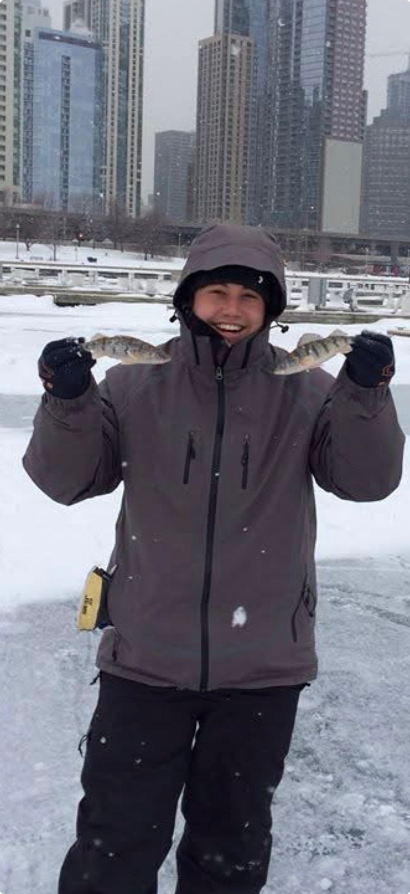
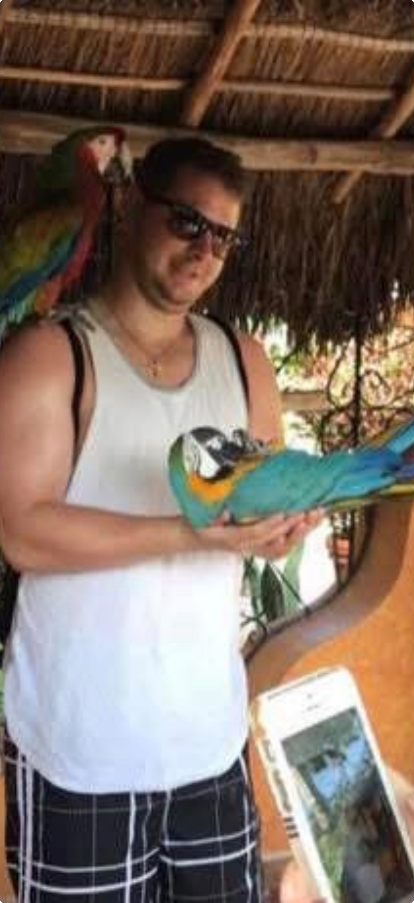
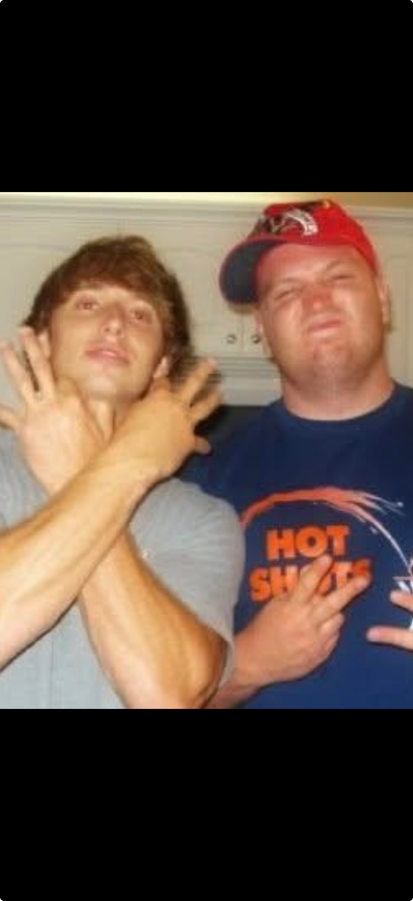

The Pride League is set to descend upon Klein Creek this Sunday for what organizers are calling "the most important round of golf since someone invented the mulligan." The stakes? Glory. The format? Degenerate. The participants? Questionable at best.
Here's your official preview of the Pride League Open — where legends are made, scores are fictional, and no one leaves without a new nickname.
🏌️ The Format
First 9 — Skins. Someone's going home poor and blaming the wind. Last 9 — Scramble. Fancy code for "everyone picks up each other's garbage and pretends they shot 39." There will be no official scorekeeper, no official rules, only vibes and disputes.
🏆 The Matchup
The teams are locked. The stakes are set. Two fathers. Two fantasy degenerates. One course. May the best team of misfits win.
👤 The Players

"Ole Shawty"
Arriving at Klein Creek like Aaron Rodgers returning to Lambeau — with a 5-minute warm-up drive and a delusional sense of confidence. Shawty has applied for a part-time job as a golf course marshal at Klein Creek, presumably so he can enforce the blistering pace of play he'll be violating by hole 3. He's spent the week studying the course like it's the ACT, which means he'll still three-putt from 12 feet. The man is a seasoned fish chef — he'll filet your wallet on the front 9 and serve it up with a side of lemon pepper by the turn. Expect him to be making his 4:30 PM senior early bird special dinner reservation before you've even finished the back 9. He's got coupons. He's got a plan. He's got a 5:15 bedtime.

"The Negotiator"
Has somehow talked his way into another free round of golf — a feat more impressive than anything Tiger ever accomplished. Hogie will be unable to drop his usual 2 balls per hole or miscount by 4 strokes per side, as Shawty will be watching like a hawk. There's nothing like playing a round of golf with No Hogie Tribs — I've never seen someone negotiate their way out of more quadruple bogeys. The good news? Hogie recently had a baby, meaning he's running on 45 minutes of sleep and will be swinging out of spite. Word on the street is his options trading strategy rivals the retarded character from The Goonies — he's buying calls on companies that went bankrupt in 2008 and wondering why he hasn't seen profit or taken a single gain since the Obama administration. His portfolio is down bad. His golf game is down worse. At this rate he'll be selling put options on his own marriage.
"The American Icon"
After 15 years, this drunken nickname has stuck like old protein powder in a mixer bottle. Peanut Cracka will be representing the bald eagle on Sunday, which is fitting because he's about to soar, screech, and possibly eat trash out of a dumpster. As kids we were jealous of Steve getting to eat Wendy's every day. As an adult with a full head of hair, I consider myself blessed ☠️. He's a new dad — his youngest is a double striper in football, which is fucking awesome 🫡. I guess protein powder in the baby formula is paying off. He and Hogie are tied for the Big Daddy Showdown belt. The question: can the Cracka avoid moving slower than a hungover Scotty D after a long night with Hogie? Early reports say no.

"The Returning Champion"
Making his long-awaited return to Klein Creek after traveling treacherous roads from Wisconsin. Juice Man is coming in hot with the energy of a man who just grabbed a bull by the horns — and the bull happened to be the entire federal government. He's got the big dick energy of a guy who's about to sign an executive order banning slow play. He'll be riding onto the first tee in a golf cart the size of a small SUV, blaring "God Bless the USA" through a Bluetooth speaker the size of a mini fridge. His walk-up music will be whatever is loudest, his trash talk will be relentless, and he looks forward to flooding your notifications with trades you'll never accept and blowing his golf fund like a bar tab in 2011 by hole 3. Your undefeated Heavyweight Champion of Brighton Ridge. He's coming to claim the one first and last title of the Pride League Open, and he's prepared to flood the group chat with scorecard photos that nobody asked for. Make Klein Creek Great Again.
❌ Notable Absences
Scotty was asked to play but declined because he's an old rickety man whose back hurts just looking at a golf bag. Sources say he recently had an affair with a Chase Bank executive who talked dirty to him about interest rates and overdraft fees. The man is compromised. He's moving slower than a dial-up modem and his hips make a sound like a creaky floorboard every time he bends over to pick up a tee. Hard pass.
The Commissioner declined to attend because he's too good for this group. He's busy counting his Ozempic savings, polishing his collection of black stogies, and practicing his deepthroat technique in the mirror. Sources say he looked like a pro as he deepthroated a big black stogie on the Zoom call. He's got dinner reservations. He's got a podcast to listen to. He's got better things to do than watch his friends shoot 102. And honestly? He's probably right.
📋 What's on the Line
The Name Game: The loser of the first 9 skins gets their fantasy name chosen by the winner. Hurricane Shawty and Peanut Cracka are on the chopping block — one bad approach shot and Ole Shawty becomes "The Three-Putt Bandit" for the rest of the season. The Cracka could end up as "Baby Formula Breath" or something worse knowing this group.
The Big Daddy Showdown: Both Hogie and Peanut Cracka have had babies this year. This round is officially ticketed as the Big Daddy Showdown — a battle of sleep-deprived fathers swinging for the fences on pure adrenaline and caffeine. The loser has to change the next diaper. Metaphorically. Probably.
Fantasy Dynasty Points: This round doubles as a tiebreaker for next season's draft order. The winner gets bragging rights AND the ability to lord it over the group chat until football starts. Which for this group, is about 12 hours after the final putt drops.
📜 Player Requirements
1. Best playlist. No one wants to hear your podcast phase. Crank the bangers.
2. Zingers. If you're not roasting someone's swing, are you even playing golf?
3. Lots of energy. This is a memorable round, not a funeral. Well, Hogie's scorecard might be.
4. No slow play. Shawty the Marshal will be watching. And he's got a clipboard and a vengeance.
5. No Hogie math. If you card a 7, it's a 7. Not a 5 with a "gallery rule." The eyes of Klein Creek are upon you.
As the sun sets over Klein Creek on Sunday, one thing is certain: someone will be out $40 in skins, someone will have a new fantasy name they'll never live down, and everyone will head to the parking lot insisting they "actually played pretty well for not touching a club since last year."
Whether you're there in spirit or lurking in the group chat, this is the Pride League at its finest. May your drives be long, your putts be short, and your excuses be creative.
This article was written by a Pride League correspondent who cannot be named for fear of retaliation. The Commissioner was not available for comment, but he probably would have disagreed with everything anyway.